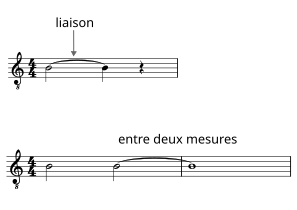

L a liaison
- La liaison est un signe en forme d'arc de cercle qui va se trouver entre deux notes de même hauteur.
- La durée de la deuxième note se rajoute à celle qui la précède.
- La liaison peut être à cheval entre deux mesures.

D ans tous les cas de liaison entre deux notes, on ne jouera que la première note.

E xercice rythmique
liaison
- Les notes reliées doivent être jouées comme un seul son prolongé.
Conseils pratiques
- Pour respecter les silences de cette partition, plaquez votre main droite sur les cordes pour étouffer le son.
🎧
O h when the saints
- Un chant gospel traditionnel américain, très populaire dans les églises et la musique folk.
- Sa mélodie simple en fait un excellent exemple pour apprendre la liaison, car certaines notes sont prolongées.
🎧